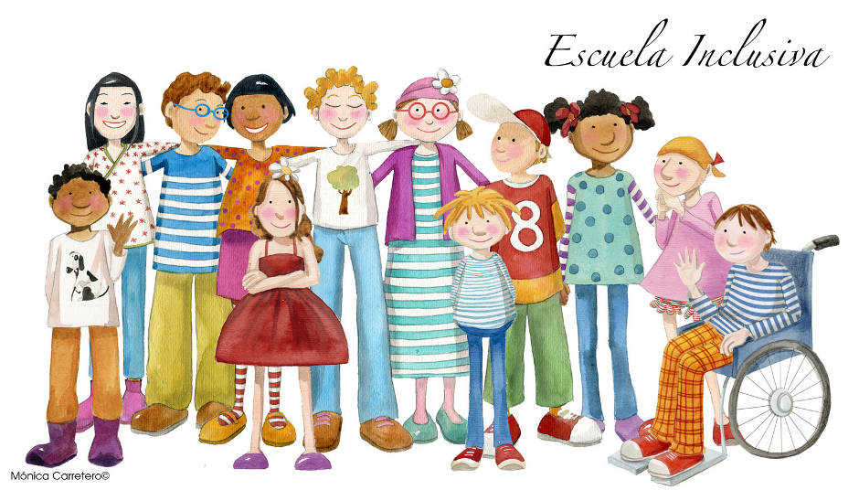

Evolución de la educación inclusiva.
En este sentido se puede decir que la educación inclusiva tiene su origen en necesidad histórica de responder, resguardar y garantizar el derecho a la educación de todos niños, niñas y adolescentes sin ningún tipo de discriminación, ya que históricamente los sistemas educativos han afrontado distintos desafíos a la hora de brindar una educación de calidad, entendiéndose que ésta tiene un enfoque integral y equitativo, es decir, para que la educación pueda considerarse de calidad debe proporcionar al dicente una formación sólida y significativa que le permita desarrollase como un ser funcional, es decir, que lo prepare para enfrentar los desafíos de la vida y contribuir positivamente a la sociedad; asimismo entre las características de la educación de calidad se encuentra equidad, es decir esta debe garantizar la igualdad de trato y accesibilidad a los servicios educativos, ya que se promueve la eliminación de las barreras y desigualdades en la esfera de la educación. En conclusión, al punto anterior podemos decir que, de esa búsqueda de una educación de calidad, promover la equidad y eliminar barreras surge el enfoque inclusivo de la educación.
En cuanto a la evolución histórica de la Educación Inclusiva esta se puede dividir por fechas o por fases en el proceso de cambio en el paradigma de la inclusión, si abordamos dicha evolución en base a las fechas, tenemos que durante el Siglo XIX las personas con discapacidad no tenían acceso a la educación, ya que se les consideraba incapaces de aprender, posteriormente la educación inclusiva se abordaría desde un punto de vista clínico en el que las personas con discapacidad eran consideradas personas enfermas que necesitaban atención especializada por lo que eran recluidas en instituciones médicas; durante la década de los 1960 y 1970 se permite el acceso de las personas con discapacidad a la educación, sin embargo se aborda desde un enfoque segregacionista, pues se les ofrecía una educación especial, las conocidas “escuelas para sordos, ciegos, etc.” que a pesar de los avances en materia de educación inclusiva siguen observándose hasta la actualidad; En la década de 1990 se aborda desde un enfoque verdaderamente inclusivo donde se pretende adaptar los entornos, prácticas y recursos educativos para atender a la necesidad de todos los estudiantes, tanto aquellos que presentan una discapacidad como aquellos que presentan necesidades específicas de apoyo educativo; Finalmente, en el siglo XXI la educación inclusiva se vuelve un objetivo fundamental para los sistemas educativos puesto que se fortalecen las políticas y se implementan estrategias para promover la inclusión, dentro de estas políticas se encuentran las herramientas internacionales.
